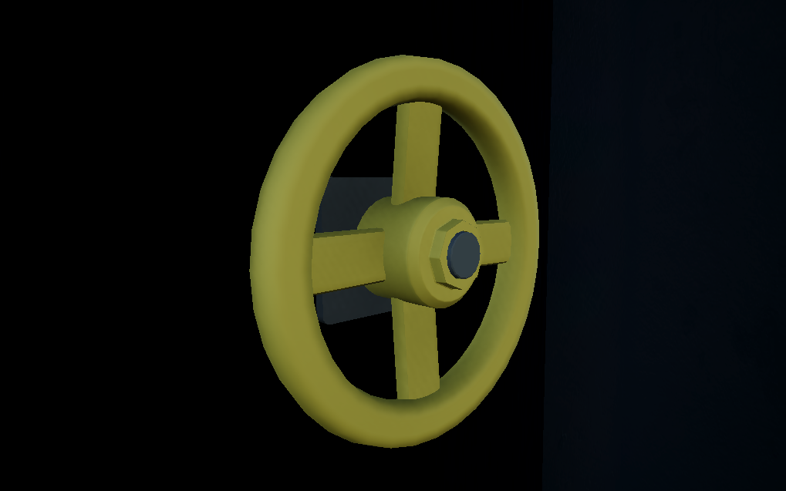
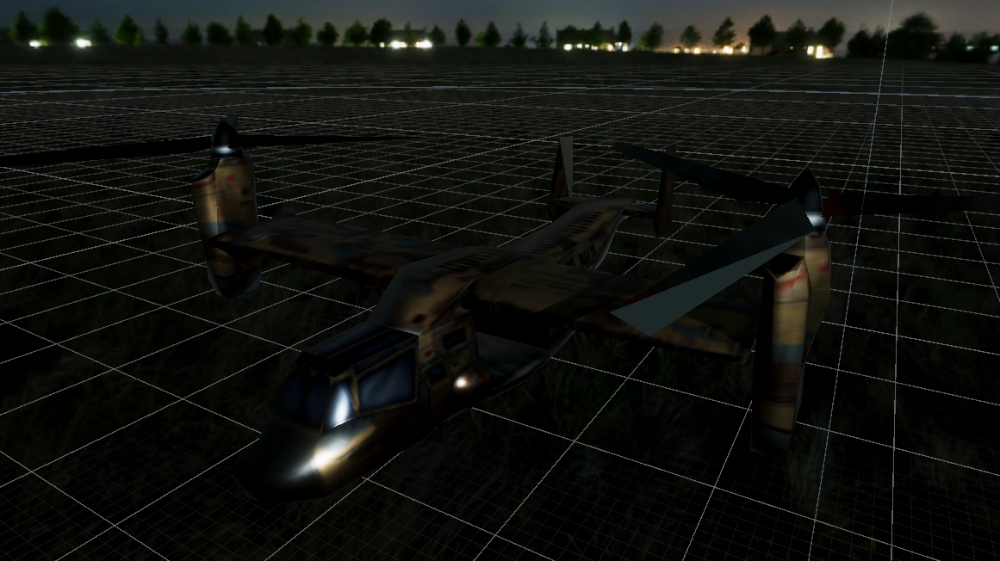

lampe torche
La lampe torche est un "must have" dans une situation post apocalyptic, cet incontournable est disponible en tant que gadget dans notre escape game. Elle permet à l'utilisateur de s'orienter et de trouver les objets nécessaires plus facilement !

using System.Collections;
using System.Collections.Generic;
using UnityEngine;
public class FlashlightBehaviour : MonoBehaviour
{
[SerializeField] GameObject _flashlightLightOB;
private bool _isFlashlightTurnedON;
// Start is called before the first frame update
void Start()
{
_isFlashlightTurnedON = true;
TurnOnOrOffFlashlightLight(_isFlashlightTurnedON);
}
public void ActivateFlashlight()
{
_isFlashlightTurnedON = !_isFlashlightTurnedON;
TurnOnOrOffFlashlightLight(_isFlashlightTurnedON);
}
void TurnOnOrOffFlashlightLight(bool lightStatus)
{
_flashlightLightOB.SetActive(lightStatus);
}
}
la vanne
Cet élément permet de couper l'arrivé du gaz qui vous empêchera de progresser dans la suite de la salle.

using System;
using UnityEngine.Events;
using UnityEngine.XR.Interaction.Toolkit;
namespace UnityEngine.XR.Content.Interaction
{
///
/// An interactable knob that follows the rotation of the interactor
///
public class XRKnob : XRBaseInteractable
{
const float k_ModeSwitchDeadZone = 0.1f; // Prevents rapid switching between the different rotation tracking modes
///
/// Helper class used to track rotations that can go beyond 180 degrees while minimizing accumulation error
///
struct TrackedRotation
{
///
/// The anchor rotation we calculate an offset from
///
float m_BaseAngle;
///
/// The target rotate we calculate the offset to
///
float m_CurrentOffset;
///
/// Any previous offsets we've added in
///
float m_AccumulatedAngle;
///
/// The total rotation that occurred from when this rotation started being tracked
///
public float totalOffset => m_AccumulatedAngle + m_CurrentOffset;
///
/// Resets the tracked rotation so that total offset returns 0
///
public void Reset()
{
m_BaseAngle = 0.0f;
m_CurrentOffset = 0.0f;
m_AccumulatedAngle = 0.0f;
}
///
/// Sets a new anchor rotation while maintaining any previously accumulated offset
///
/// The XZ vector used to calculate a rotation angle
public void SetBaseFromVector(Vector3 direction)
{
// Update any accumulated angle
m_AccumulatedAngle += m_CurrentOffset;
// Now set a new base angle
m_BaseAngle = Mathf.Atan2(direction.z, direction.x) * Mathf.Rad2Deg;
m_CurrentOffset = 0.0f;
}
public void SetTargetFromVector(Vector3 direction)
{
// Set the target angle
var targetAngle = Mathf.Atan2(direction.z, direction.x) * Mathf.Rad2Deg;
// Return the offset
m_CurrentOffset = ShortestAngleDistance(m_BaseAngle, targetAngle, 360.0f);
// If the offset is greater than 90 degrees, we update the base so we can rotate beyond 180 degrees
if (Mathf.Abs(m_CurrentOffset) > 90.0f)
{
m_BaseAngle = targetAngle;
m_AccumulatedAngle += m_CurrentOffset;
m_CurrentOffset = 0.0f;
}
}
}
[Serializable]
public class ValueChangeEvent : UnityEvent { }
[SerializeField]
[Tooltip("The object that is visually grabbed and manipulated")]
Transform m_Handle = null;
[SerializeField]
[Tooltip("The value of the knob")]
[Range(0.0f, 1.0f)]
float m_Value = 0.5f;
[SerializeField]
[Tooltip("Whether this knob's rotation should be clamped by the angle limits")]
bool m_ClampedMotion = true;
[SerializeField]
[Tooltip("Rotation of the knob at value '1'")]
float m_MaxAngle = 90.0f;
[SerializeField]
[Tooltip("Rotation of the knob at value '0'")]
float m_MinAngle = -90.0f;
[SerializeField]
[Tooltip("Angle increments to support, if greater than '0'")]
float m_AngleIncrement = 0.0f;
[SerializeField]
[Tooltip("The position of the interactor controls rotation when outside this radius")]
float m_PositionTrackedRadius = 0.1f;
[SerializeField]
[Tooltip("How much controller rotation ")]
float m_TwistSensitivity = 1.5f;
[SerializeField]
[Tooltip("Events to trigger when the knob is rotated")]
ValueChangeEvent m_OnValueChange = new ValueChangeEvent();
IXRSelectInteractor m_Interactor;
bool m_PositionDriven = false;
bool m_UpVectorDriven = false;
TrackedRotation m_PositionAngles = new TrackedRotation();
TrackedRotation m_UpVectorAngles = new TrackedRotation();
TrackedRotation m_ForwardVectorAngles = new TrackedRotation();
float m_BaseKnobRotation = 0.0f;
///
/// The object that is visually grabbed and manipulated
///
public Transform handle
{
get => m_Handle;
set => m_Handle = value;
}
///
/// The value of the knob
///
public float value
{
get => m_Value;
set
{
SetValue(value);
SetKnobRotation(ValueToRotation());
}
}
///
/// Whether this knob's rotation should be clamped by the angle limits
///
public bool clampedMotion
{
get => m_ClampedMotion;
set => m_ClampedMotion = value;
}
///
/// Rotation of the knob at value '1'
///
public float maxAngle
{
get => m_MaxAngle;
set => m_MaxAngle = value;
}
///
/// Rotation of the knob at value '0'
///
public float minAngle
{
get => m_MinAngle;
set => m_MinAngle = value;
}
///
/// The position of the interactor controls rotation when outside this radius
///
public float positionTrackedRadius
{
get => m_PositionTrackedRadius;
set => m_PositionTrackedRadius = value;
}
///
/// Events to trigger when the knob is rotated
///
public ValueChangeEvent onValueChange => m_OnValueChange;
void Start()
{
SetValue(m_Value);
SetKnobRotation(ValueToRotation());
}
protected override void OnEnable()
{
base.OnEnable();
selectEntered.AddListener(StartGrab);
selectExited.AddListener(EndGrab);
}
protected override void OnDisable()
{
selectEntered.RemoveListener(StartGrab);
selectExited.RemoveListener(EndGrab);
base.OnDisable();
}
void StartGrab(SelectEnterEventArgs args)
{
m_Interactor = args.interactorObject;
m_PositionAngles.Reset();
m_UpVectorAngles.Reset();
m_ForwardVectorAngles.Reset();
UpdateBaseKnobRotation();
UpdateRotation(true);
}
void EndGrab(SelectExitEventArgs args)
{
m_Interactor = null;
}
public override void ProcessInteractable(XRInteractionUpdateOrder.UpdatePhase updatePhase)
{
base.ProcessInteractable(updatePhase);
if (updatePhase == XRInteractionUpdateOrder.UpdatePhase.Dynamic)
{
if (isSelected)
{
UpdateRotation();
}
}
}
void UpdateRotation(bool freshCheck = false)
{
// Are we in position offset or direction rotation mode?
var interactorTransform = m_Interactor.GetAttachTransform(this);
// We cache the three potential sources of rotation - the position offset, the forward vector of the controller, and up vector of the controller
// We store any data used for determining which rotation to use, then flatten the vectors to the local xz plane
var localOffset = transform.InverseTransformVector(interactorTransform.position - m_Handle.position);
localOffset.y = 0.0f;
var radiusOffset = transform.TransformVector(localOffset).magnitude;
localOffset.Normalize();
var localForward = transform.InverseTransformDirection(interactorTransform.forward);
var localY = Math.Abs(localForward.y);
localForward.y = 0.0f;
localForward.Normalize();
var localUp = transform.InverseTransformDirection(interactorTransform.up);
localUp.y = 0.0f;
localUp.Normalize();
if (m_PositionDriven && !freshCheck)
radiusOffset *= (1.0f + k_ModeSwitchDeadZone);
// Determine when a certain source of rotation won't contribute - in that case we bake in the offset it has applied
// and set a new anchor when they can contribute again
if (radiusOffset >= m_PositionTrackedRadius)
{
if (!m_PositionDriven || freshCheck)
{
m_PositionAngles.SetBaseFromVector(localOffset);
m_PositionDriven = true;
}
}
else
m_PositionDriven = false;
// If it's not a fresh check, then we weight the local Y up or down to keep it from flickering back and forth at boundaries
if (!freshCheck)
{
if (!m_UpVectorDriven)
localY *= (1.0f - (k_ModeSwitchDeadZone * 0.5f));
else
localY *= (1.0f + (k_ModeSwitchDeadZone * 0.5f));
}
if (localY > 0.707f)
{
if (!m_UpVectorDriven || freshCheck)
{
m_UpVectorAngles.SetBaseFromVector(localUp);
m_UpVectorDriven = true;
}
}
else
{
if (m_UpVectorDriven || freshCheck)
{
m_ForwardVectorAngles.SetBaseFromVector(localForward);
m_UpVectorDriven = false;
}
}
// Get angle from position
if (m_PositionDriven)
m_PositionAngles.SetTargetFromVector(localOffset);
if (m_UpVectorDriven)
m_UpVectorAngles.SetTargetFromVector(localUp);
else
m_ForwardVectorAngles.SetTargetFromVector(localForward);
// Apply offset to base knob rotation to get new knob rotation
var knobRotation = m_BaseKnobRotation - ((m_UpVectorAngles.totalOffset + m_ForwardVectorAngles.totalOffset) * m_TwistSensitivity) - m_PositionAngles.totalOffset;
// Clamp to range
if (m_ClampedMotion)
knobRotation = Mathf.Clamp(knobRotation, m_MinAngle, m_MaxAngle);
SetKnobRotation(knobRotation);
// Reverse to get value
var knobValue = (knobRotation - m_MinAngle) / (m_MaxAngle - m_MinAngle);
SetValue(knobValue);
}
void SetKnobRotation(float angle)
{
if (m_AngleIncrement > 0)
{
var normalizeAngle = angle - m_MinAngle;
angle = (Mathf.Round(normalizeAngle / m_AngleIncrement) * m_AngleIncrement) + m_MinAngle;
}
if (m_Handle != null)
m_Handle.localEulerAngles = new Vector3(0.0f, angle, 0.0f);
}
void SetValue(float value)
{
if (m_ClampedMotion)
value = Mathf.Clamp01(value);
if (m_AngleIncrement > 0)
{
var angleRange = m_MaxAngle - m_MinAngle;
var angle = Mathf.Lerp(0.0f, angleRange, value);
angle = Mathf.Round(angle / m_AngleIncrement) * m_AngleIncrement;
value = Mathf.InverseLerp(0.0f, angleRange, angle);
}
m_Value = value;
m_OnValueChange.Invoke(m_Value);
}
float ValueToRotation()
{
return m_ClampedMotion ? Mathf.Lerp(m_MinAngle, m_MaxAngle, m_Value) : Mathf.LerpUnclamped(m_MinAngle, m_MaxAngle, m_Value);
}
void UpdateBaseKnobRotation()
{
m_BaseKnobRotation = Mathf.LerpUnclamped(m_MinAngle, m_MaxAngle, m_Value);
}
static float ShortestAngleDistance(float start, float end, float max)
{
var angleDelta = end - start;
var angleSign = Mathf.Sign(angleDelta);
angleDelta = Math.Abs(angleDelta) % max;
if (angleDelta > (max * 0.5f))
angleDelta = -(max - angleDelta);
return angleDelta * angleSign;
}
void OnDrawGizmosSelected()
{
const int k_CircleSegments = 16;
const float k_SegmentRatio = 1.0f / k_CircleSegments;
// Nothing to do if position radius is too small
if (m_PositionTrackedRadius <= Mathf.Epsilon)
return;
// Draw a circle from the handle point at size of position tracked radius
var circleCenter = transform.position;
if (m_Handle != null)
circleCenter = m_Handle.position;
var circleX = transform.right;
var circleY = transform.forward;
Gizmos.color = Color.green;
var segmentCounter = 0;
while (segmentCounter < k_CircleSegments)
{
var startAngle = (float)segmentCounter * k_SegmentRatio * 2.0f * Mathf.PI;
segmentCounter++;
var endAngle = (float)segmentCounter * k_SegmentRatio * 2.0f * Mathf.PI;
Gizmos.DrawLine(circleCenter + (Mathf.Cos(startAngle) * circleX + Mathf.Sin(startAngle) * circleY) * m_PositionTrackedRadius,
circleCenter + (Mathf.Cos(endAngle) * circleX + Mathf.Sin(endAngle) * circleY) * m_PositionTrackedRadius);
}
}
void OnValidate()
{
if (m_ClampedMotion)
m_Value = Mathf.Clamp01(m_Value);
if (m_MinAngle > m_MaxAngle)
m_MinAngle = m_MaxAngle;
SetKnobRotation(ValueToRotation());
}
}
}
l helicoptere
L'hélicoptère viendra vous récupérer une fois que vous aurez réussi toutes les énigmes pour vous échapper.

using System.Collections;
using System.Collections.Generic;
using UnityEngine;
public class HelicopterManager : MonoBehaviour
{
public GameObject[] helices;
public float rotationSpeed = 1500f;
private bool moving = false;
void Update()
{
if (helices != null && helices.Length > 0) {
foreach(GameObject helice in helices) {
helice.transform.Rotate(Vector3.up * rotationSpeed * Time.deltaTime);
}
}
if (moving) {
if (transform.position.z > 0) {
transform.Translate(Vector3.forward * Time.deltaTime * 5f);
}
}
}
public void OnPushTrigger() {
moving = true;
}
}